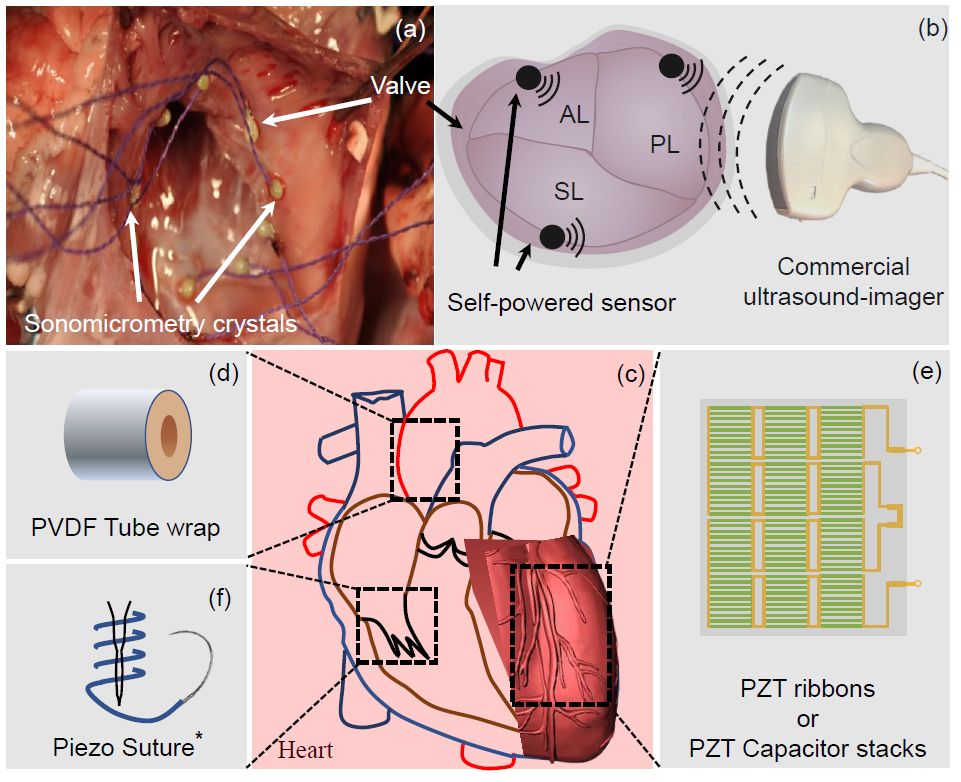

Ultrasound Imaging-based Biotelemetry
Sonomicrometry Biotelemetry and Cardiac Energy Harvesting

Source: AIMS Lab, WUSTL
"Your ultrasound scanner is already a wireless base station"
Project Description:
Implantable medical devices are constrained by the power and size cost of their wireless link. In this research, we demonstrated that commercial off-the-shelf diagnostic ultrasound readers (GE VScan, Siemens P10, Philips Lumify) can double as wireless telemetry base stations for millimeter-scale piezoelectric implants. Using M-scan imaging, we achieved data rates up to 800 Kbps at more than 12 cm of tissue depth at microwatt transmit power, validated both in-vitro and in-vivo, with multi-implant access enabled through FDMA and CDMA (Walsh-Hadamard codes). In companion work, we showed that the non-linear perturbations of the tricuspid valve can be harvested by piezoelectric sutures to self-power such implants, with in-vivo validation across seven ovine models identifying optimal surgical placement. Target applications include cochlear and neural implants, cardiac pacemakers, insulin pumps and swallowable imaging systems.
List of Publications:
- Sri Harsha Kondapalli et al. "Multi-access in-vivo biotelemetry using sonomicrometry and M-scan ultrasound imaging." IEEE Transactions on Biomedical Engineering, 2018.
- Sri Harsha Kondapalli et al. "Feasibility of self-powering and energy harvesting using cardiac valvular perturbations." IEEE Transactions on Biomedical Circuits and Systems, 2018.
B-Scan Beamforming: Sub-Nanowatt Telemetry
"From microwatts to nanowatts"
Project Description:
By leveraging the beamforming already performed by B-scan ultrasound imaging, we reduced the transmit power required for ultrasonic biotelemetry to 10–700 nW — more than a 10× reduction compared to our M-scan approach. A proof-of-concept transmitter was prototyped on a TI CC1310 microcontroller in a waterproof enclosure and read out using unmodified commercial imagers. This work forms the basis of my PhD dissertation and a filed U.S. patent application.
List of Publications:
- Sri Harsha Kondapalli and Shantanu Chakrabartty. "Sub-nanowatt ultrasonic bio-telemetry using B-scan imaging." IEEE Open Journal of Engineering in Medicine and Biology, 2020.
Related Patent:
- Shantanu Chakrabartty and Sri Harsha Kondapalli. "Method for Ultra-low-power Ultrasound Biotelemetry using B-Scan Imaging." U.S. Patent Application, filed November 2020.